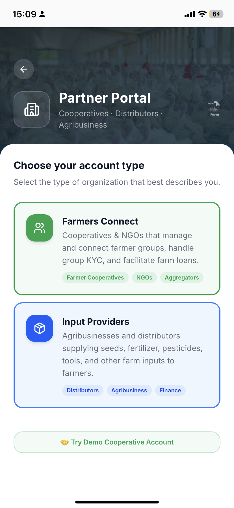
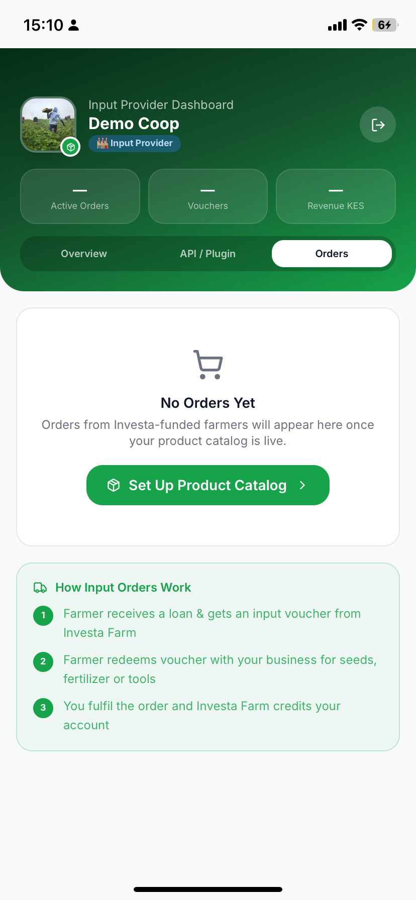
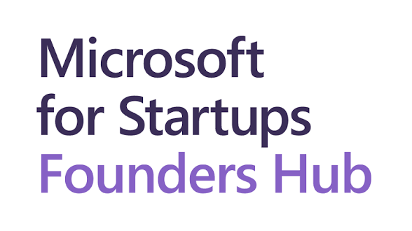
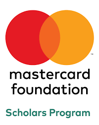
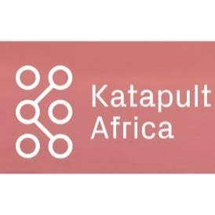

Bringing cooperatives into the digital agricultural economy
Cooperatives are at the heart of Kenya's agricultural sector. Investa Farm works directly with farmer cooperatives to onboard their members, secure collective financing, and ensure fair revenue distribution at harvest.
Group Farm Listings
Cooperatives can list farm shares collectively on the Investa Farm platform — pooling land and resources to access larger capital than individual farmers could raise alone.
Collective Financing
We provide 100% production capital to cooperative farms. Seeds, inputs, equipment, and labour — all funded before the season starts. No upfront cost to the cooperative.
Transparent Revenue Distribution
At harvest, revenue is distributed transparently across all cooperative members. Each farmer's share is calculated fairly based on their contribution to the farm — paid directly to M-Pesa.
Digital Farm Management
Cooperative leaders can manage their farm profile, report progress, track funding status, and communicate with investors through our Farmer Operations Engine.
Build Your Track Record
Every season, your cooperative builds a verified production history on the platform — improving your reputation with investors and unlocking access to larger capital in future seasons.
Cooperative Onboarding Support
Our team provides hands-on support to onboard your cooperative — from registration and KYC to listing your first farm and managing investor communications.
We work with the entire agricultural value chain
Investa Farm sits at the intersection of farming, finance, and agribusiness. We actively partner with organisations that strengthen our ecosystem — from input suppliers to farmer-sourcing networks.
Input Providers
We partner with certified input providers — seed companies, fertiliser suppliers, pesticide distributors, and irrigation equipment providers. Our farms use quality, approved inputs sourced through our agribusiness network.
What we offer input providers:
- Direct supply agreements for 15+ active farm partnerships
- Guaranteed purchase volumes per season
- Payment secured through Investa Farm's capital pool
- Access to a growing network of 120,000+ farmers
Offtakers & Buyers
We connect verified Kenyan farm harvests to reliable, pre-vetted offtakers — export companies, processors, supermarkets, and international buyers who pay fair market prices.
Benefits for offtakers:
- Access to verified, high-quality Kenyan farm produce
- Predictable supply — farms planned and managed by our team
- Direct sourcing from farms with full traceability
- Export-grade quality standards on all listed crops
Farmer Sourcing Partners
We work with organisations, NGOs, county governments, and agricultural extension services that can connect us with registered farmers and farmer groups across Kenya's key agricultural counties.
Partner with us to:
- Connect farmers in your network to Investa Farm's capital
- Help smallholder farmers access production support
- Earn referral incentives for onboarded farmer groups
- Drive financial inclusion in your agricultural community
Financial & Institutional Partners
We collaborate with microfinance institutions, development banks, impact investors, and foundations that share our mission of agricultural financial inclusion across East Africa.
Collaboration areas:
- Co-investment in agricultural seasons
- De-risking instruments and guarantee schemes
- Grant-funded farmer onboarding programmes
- Financial literacy and farmer education programmes
A dedicated digital portal for every partner type
Whether you're a farmer cooperative, input supplier, or agribusiness — the Investa Farm platform gives you a fully tailored digital workspace to manage your operations.

Choose your partnership type and go live instantly
Cooperatives and NGOs managing farmer groups select Farmers Connect — handling group KYC, farm loans, and collective listings. Agribusinesses and distributors select Input Providers to supply seeds, fertilisers, and tools directly to Investa-funded farmers.
Both portal types include live dashboards, order management, revenue tracking, and direct API/plugin integration for larger partners.
Request Partner Access →
Input Provider Dashboard
Manage orders, vouchers & revenue from Investa-funded farms

Live Investment Market
Your farm listings visible to investors on the primary market

Farm Exchange
Farm share overview — price, volume, availability & live status
Bring your farmers onto the Investa Farm platform
If you work with farmer groups, cooperatives, or smallholders in Kenya — we want to work with you. Investa Farm provides the capital, the technology, and the market access. Your farmers keep their land and earn their fair share.
What your farmers get on the app
Every farmer you onboard through your cooperative gets a fully digital farming profile — with GPS-verified farm map, live crop timeline, input marketplace, and M-Pesa earnings wallet.
Takes under 5 minutes — just a phone number and basic details.
Upload National ID, farm ownership proof, and passport photo. Compliance team approves by email.
Approved farmers list their farm, receive production capital, and are matched with investors on the primary market.
Farmers receive 35–55% revenue share directly to their Farmer Wallet, withdrawable via M-Pesa.


Trusted organisations across the agricultural value chain



Want to become a partner? Get in touch →
Ready to partner with Investa Farm?
Whether you represent a cooperative, agribusiness, input supplier, or NGO — our team is ready to explore how we can work together. Fill in the form and we'll be in touch within 48 hours.